智能体设计 IV：智能体评测
如何评测智能体：评测设计、指标、可靠性、成本与基准测试的选择。
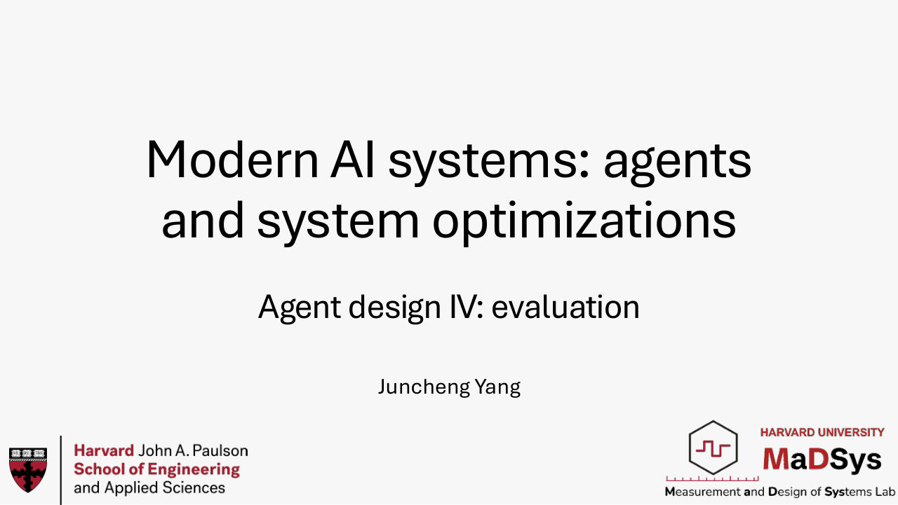
现代 AI 系统：智能体与系统优化
Juncheng Yang
智能体设计 IV：评测
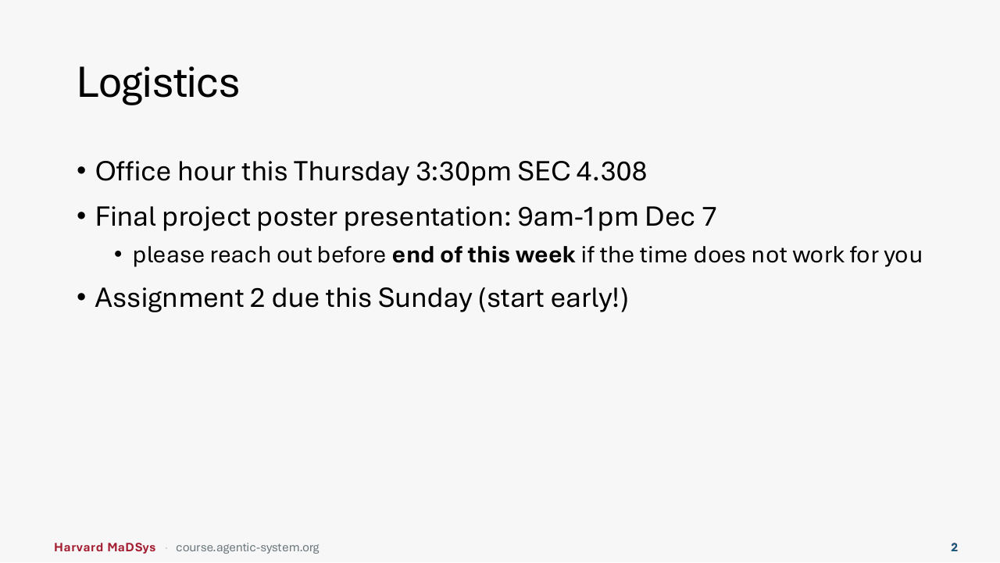
事务安排
- 本周四答疑：3:30pm，SEC 4.308
- 期末项目海报展示：12 月 7 日 9am–1pm
- 如果时间不合适，请在本周结束前联系我们
- 作业 2 本周日截止（尽早开始！）
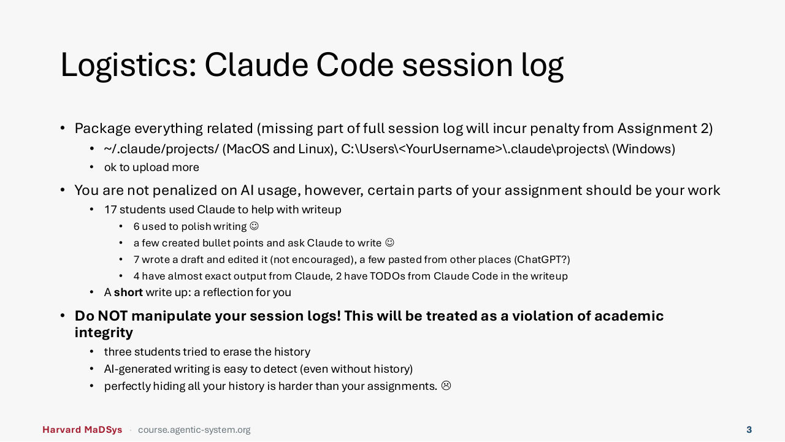
事务安排：Claude Code 会话日志
- 把相关内容全部打包（从作业 2 开始，完整会话日志缺失部分将被扣分）
- 位置：
~/.claude/projects/（macOS 和 Linux），C:\Users\<YourUsername>\.claude\projects\（Windows） - 多传一些没关系
- 位置：
- 使用 AI 不会被扣分，但作业中的某些部分应当是你自己的工作
- 17 位同学用 Claude 帮忙写报告
- 6 位用来润色文字 ☺
- 几位先列要点再让 Claude 来写 ☺
- 7 位让 Claude 写初稿再自己改（不鼓励），还有几位从别处粘贴（ChatGPT？）
- 4 位几乎直接用了 Claude 的输出，2 位的报告里还留着 Claude Code 的 TODO
- 简短的报告：是写给你自己的反思
- 17 位同学用 Claude 帮忙写报告
- 不要篡改你的会话日志！ 这将被视为违反学术诚信
- 有三位同学试图抹掉历史记录
- AI 生成的文字很容易识别（即使没有历史记录）
- 完美地藏起所有历史，比做作业还难
今天的安排
- 智能体评测
- 高性价比的智能体
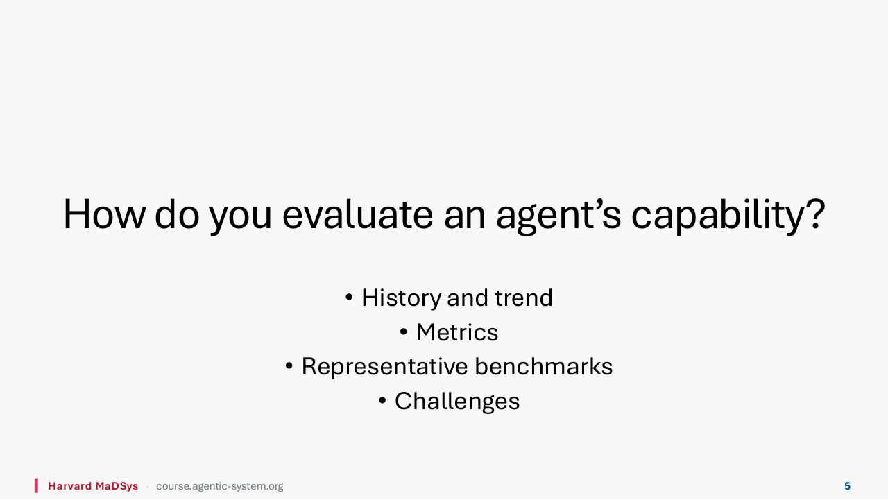
如何评测一个智能体的能力？
- 历史与趋势
- 指标
- 代表性基准测试
- 挑战
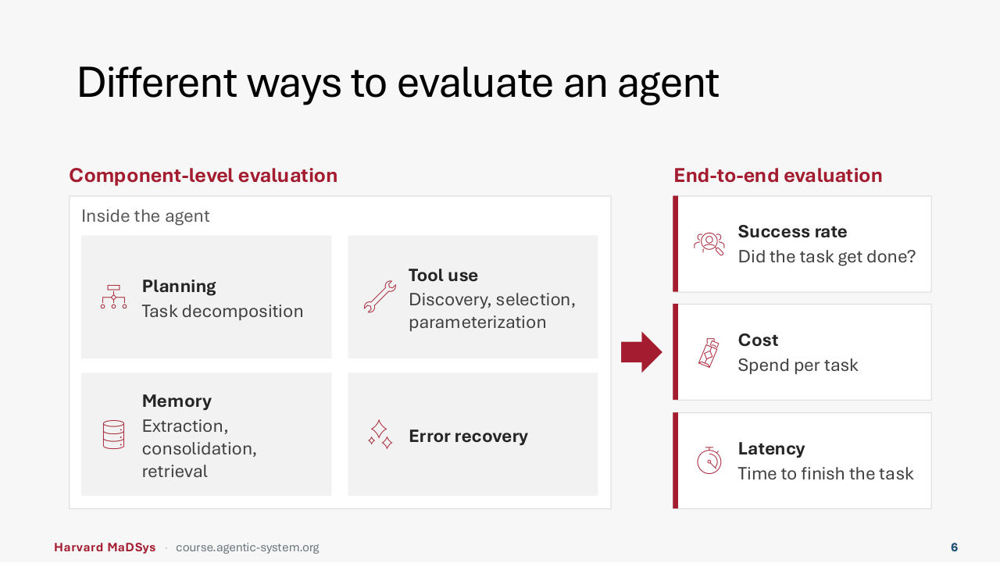
评测智能体的不同方式
组件级评测（智能体内部）
- 规划：任务分解
- 工具使用：发现、选择、参数填写
- 记忆：抽取、整合、检索
- 错误恢复
端到端评测
- 成功率：任务完成了吗？
- 成本：每个任务的花费
- 延迟：完成任务所需时间
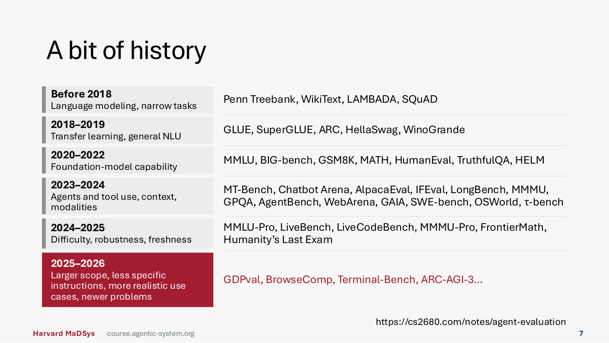
一点历史
- 2018 年以前——语言建模、窄任务：Penn Treebank、WikiText、LAMBADA、SQuAD
- 2018–2019——迁移学习、通用自然语言理解：GLUE、SuperGLUE、ARC、HellaSwag、WinoGrande
- 2020–2022——基础模型能力：MMLU、BIG-bench、GSM8K、MATH、HumanEval、TruthfulQA、HELM
- 2023–2024——智能体与工具使用、上下文、多模态：MT-Bench、Chatbot Arena、AlpacaEval、IFEval、LongBench、MMMU、GPQA、AgentBench、WebArena、GAIA、SWE-bench、OSWorld、τ-bench
- 2024–2025——难度、鲁棒性、时效性：MMLU-Pro、LiveBench、LiveCodeBench、MMMU-Pro、FrontierMath、Humanity's Last Exam
- 2025–2026——更大的范围、更不具体的指令、更真实的用例、更新的问题：GDPval、BrowseComp、Terminal-Bench、ARC-AGI-3……
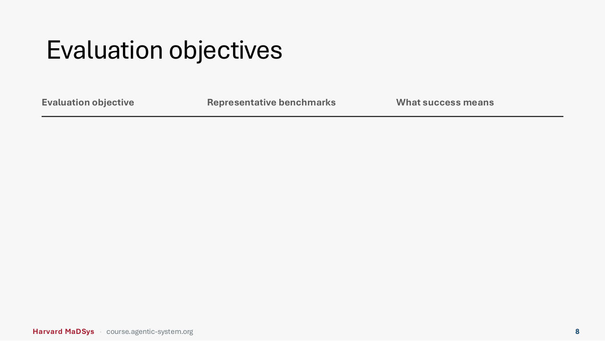
评测目标
| 评测目标 | 代表性基准 | 成功意味着 |
|---|---|---|
| 预测文本 | PTB、WikiText | 给观测到的文本分配高概率 |
| 给出正确答案 | MMLU、GSM8K、GPQA、HLE | 与已知答案匹配 |
| 给出更受偏好的回答 | Arena、AlpacaEval、MT-Bench | 获得人类或模型的好评 |
| 写出能运行的代码 | HumanEval、LiveCodeBench、SWE-bench | 通过可执行的测试 |
| 完成一个交互式任务 | WebArena、OSWorld、τ-bench、Terminal-Bench | 达到要求的环境状态 |
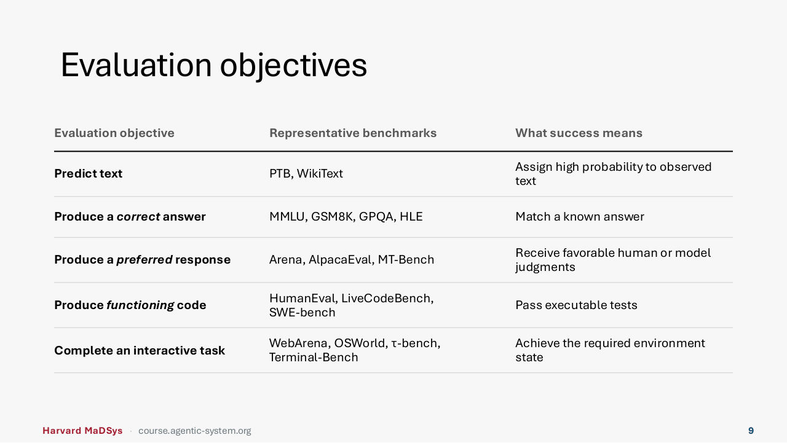
评测目标
（同上页，强调最后几行——智能体评测关注的是“完成交互式任务”）
| 评测目标 | 代表性基准 | 成功意味着 |
|---|---|---|
| 预测文本 | PTB、WikiText | 给观测到的文本分配高概率 |
| 给出正确答案 | MMLU、GSM8K、GPQA、HLE | 与已知答案匹配 |
| 给出更受偏好的回答 | Arena、AlpacaEval、MT-Bench | 获得人类或模型的好评 |
| 写出能运行的代码 | HumanEval、LiveCodeBench、SWE-bench | 通过可执行的测试 |
| 完成一个交互式任务 | WebArena、OSWorld、τ-bench、Terminal-Bench | 达到要求的环境状态 |
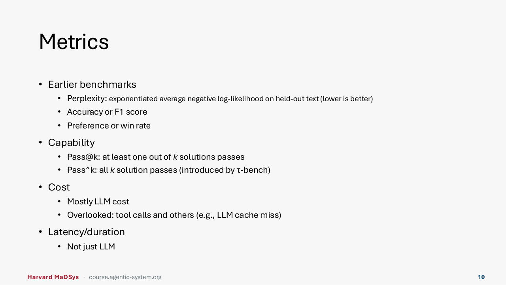
指标
- 早期基准
- 困惑度（Perplexity）：在留出文本上平均负对数似然的指数（越低越好）
- 准确率或 F1 分数
- 偏好或胜率
- 能力
- Pass@k：k 个解中至少有一个通过
- Pass^k：k 个解全部通过（由 τ-bench 提出）
- 成本
- 主要是 LLM 成本
- 常被忽视的：工具调用及其他（例如 LLM 缓存未命中）
- 延迟 / 时长
- 不只是 LLM
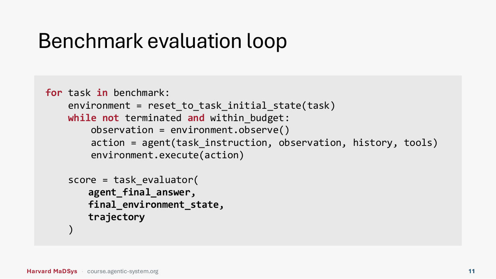
基准评测循环
for task in benchmark:
environment = reset_to_task_initial_state(task)
while not terminated and within_budget:
observation = environment.observe()
action = agent(task_instruction, observation, history, tools)
environment.execute(action)
score = task_evaluator(
agent_final_answer,
final_environment_state,
trajectory
)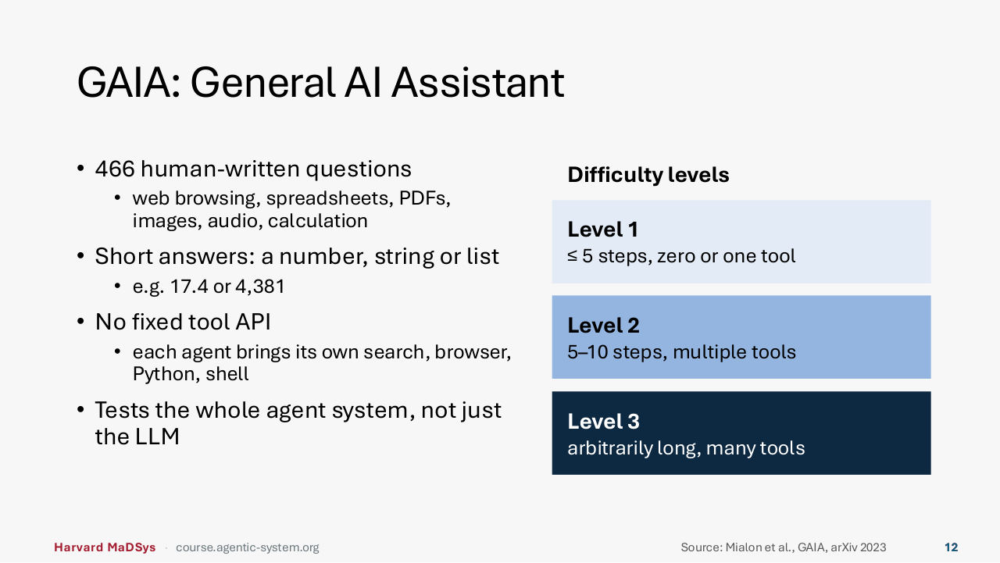
GAIA：通用 AI 助手
- 466 个人工编写的问题
- 网页浏览、电子表格、PDF、图片、音频、计算
- 简短答案：一个数字、字符串或列表，例如 17.4 或 4,381
- 没有固定的工具 API
- 每个智能体自带搜索、浏览器、Python、shell
- 测试的是整个智能体系统，而不仅仅是 LLM
难度等级
- 第 1 级：≤ 5 步，0 或 1 个工具
- 第 2 级：5–10 步，多个工具
- 第 3 级：任意长，大量工具
（来源：Mialon et al., GAIA, arXiv 2023）
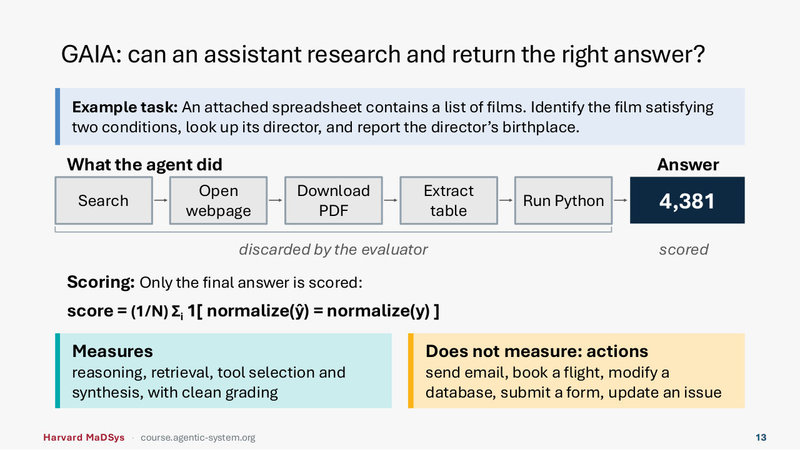
GAIA：助手能否调研并给出正确答案？
示例任务：附件电子表格中有一份电影列表。找出同时满足两个条件的那部电影，查出它的导演，并报告导演的出生地。
智能体做了什么：搜索 → 打开网页 → 下载 PDF → 提取表格 → 运行 Python → 答案 4,381（过程被评测器丢弃，只有答案计分）
计分：只对最终答案计分：score = (1/N) Σᵢ 1[ normalize(ŷ) = normalize(y) ]
- 衡量：推理、检索、工具选择与综合，判分干净
- 不衡量：动作——发邮件、订机票、修改数据库、提交表单、更新 issue
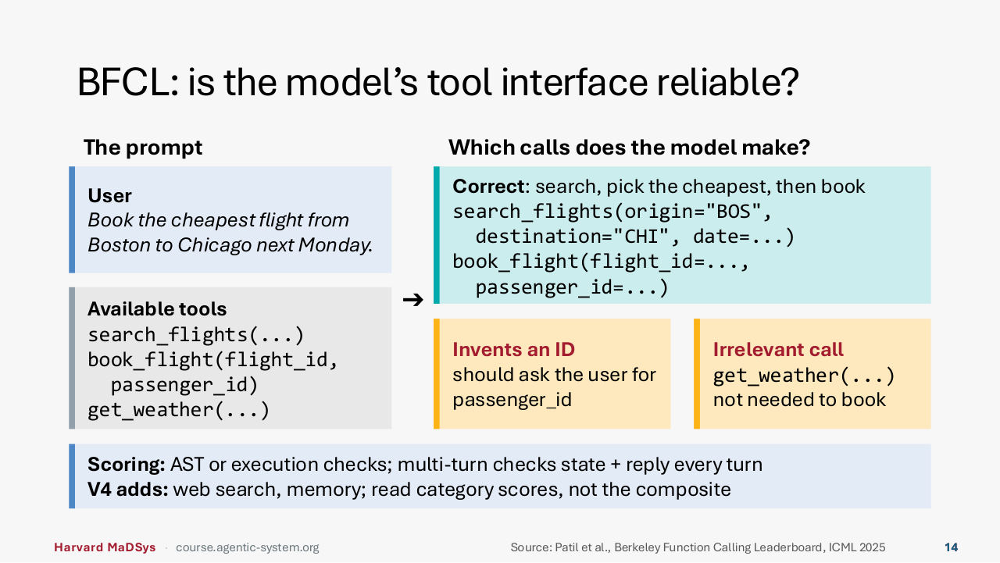
BFCL：模型的工具接口可靠吗？
提示词：用户：“帮我订下周一从波士顿到芝加哥最便宜的航班。”
可用工具：search_flights(...)、book_flight(flight_id, passenger_id)、get_weather(...)
模型会发出哪些调用？
- ✅ 正确：先搜索，挑最便宜的，再预订——
search_flights(origin="BOS", destination="CHI", date=...)→book_flight(flight_id=..., passenger_id=...) - ❌ 编造 ID：应当询问用户的 passenger_id
- ❌ 无关调用：
get_weather(...)，订票不需要
计分：AST 或执行检查；多轮场景下每一轮都检查状态和回复
V4 新增：网络搜索、记忆；请看分类得分，而不是综合分
（来源：Patil et al., Berkeley Function Calling Leaderboard, ICML 2025）
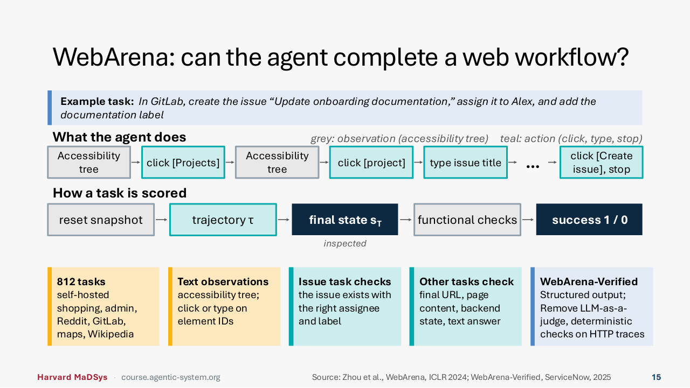
WebArena：智能体能完成一个网页工作流吗？
示例任务：在 GitLab 中创建 issue “Update onboarding documentation”，指派给 Alex，并加上 documentation 标签
智能体的做法（灰：观察〔可访问性树〕；青：动作〔点击、输入、停止〕）：可访问性树 → 点击 [Projects] → 可访问性树 → 点击 [project] → 输入 issue 标题 → 点击 [Create issue]，停止……
任务如何计分：重置快照 → 轨迹 τ → 最终状态 s_T（被检查）→ 功能性检查 → 成功 1 / 0
- 812 个任务：自托管的购物、后台管理、Reddit、GitLab、地图、Wikipedia
- 文本观察：可访问性树；对元素 ID 点击或输入
- issue 类任务检查：issue 存在，且指派人和标签正确
- 其他任务检查：最终 URL、页面内容、后端状态、文本答案
- WebArena-Verified：结构化输出；去掉 LLM 评判，改为对 HTTP 轨迹做确定性检查
（来源：Zhou et al., WebArena, ICLR 2024；WebArena-Verified, ServiceNow, 2025）
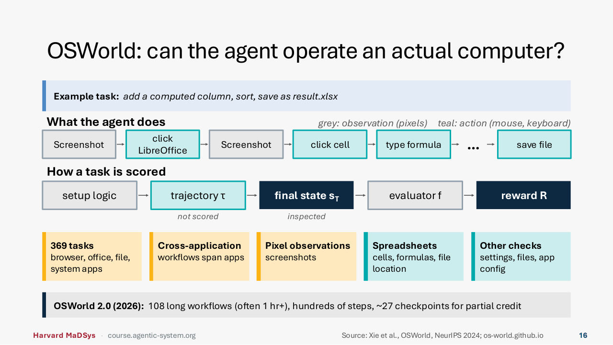
OSWorld：智能体能操作一台真正的电脑吗？
示例任务：添加一个计算列、排序、另存为 result.xlsx
智能体的做法（灰：观察〔像素〕；青：动作〔鼠标、键盘〕）：截图 → 点击 LibreOffice → 截图 → 点击单元格 → 输入公式 → 保存文件……
任务如何计分：初始化逻辑 → 轨迹 τ（不计分）→ 最终状态 s_T（被检查）→ 评估函数 f → 奖励 R
- 369 个任务：浏览器、办公软件、文件、系统应用
- 跨应用：工作流横跨多个应用
- 像素观察：屏幕截图
- 电子表格：单元格、公式、文件位置
- 其他检查：设置、文件、应用配置
（来源：Xie et al., OSWorld, NeurIPS 2024；os-world.github.io）
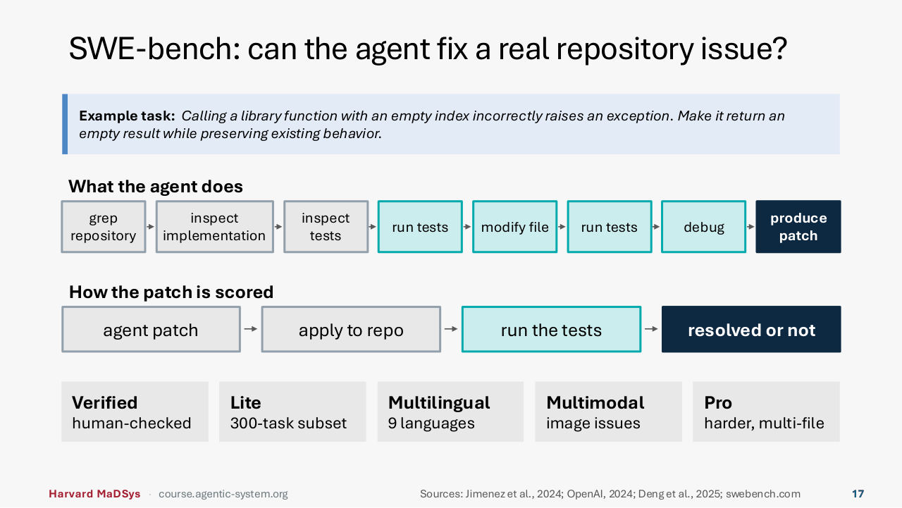
SWE-bench：智能体能修复真实仓库中的 issue 吗？
示例任务：用空索引调用某个库函数时会错误地抛出异常。让它返回空结果，同时保持现有行为不变。
智能体的做法：grep 仓库 → 查看实现 → 查看测试 → 运行测试 → 修改文件 → 运行测试 → 调试 → 产出补丁
补丁如何计分：智能体补丁 → 应用到仓库 → 运行测试 → 是否解决
变体
- Verified：经人工核验
- Lite：300 个任务的子集
- Multilingual：9 种语言
- Multimodal：包含图片的 issue
- Pro：更难、跨多文件
（来源：Jimenez et al., 2024；OpenAI, 2024；Deng et al., 2025；swebench.com）
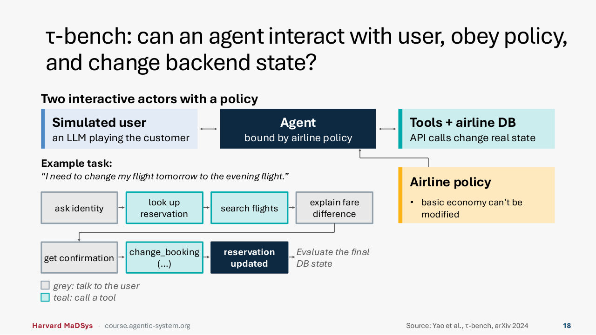
τ-bench：智能体能否与用户交互、遵守政策并修改后端状态？
两个交互参与者 + 一套政策
- 模拟用户：一个扮演顾客的 LLM
- 智能体：受航空公司政策约束
- 工具 + 航空公司数据库：API 调用会改变真实状态
- 航空公司政策示例：基础经济舱不可改签
示例任务：“我需要把明天的航班改成晚上那班。”
流程（灰：与用户对话；青：调用工具）：询问身份 → 查询预订 → 搜索航班 → 解释票价差额 → 获得确认 → change_booking(…) → 预订已更新
（来源：Yao et al., τ-bench, arXiv 2024）
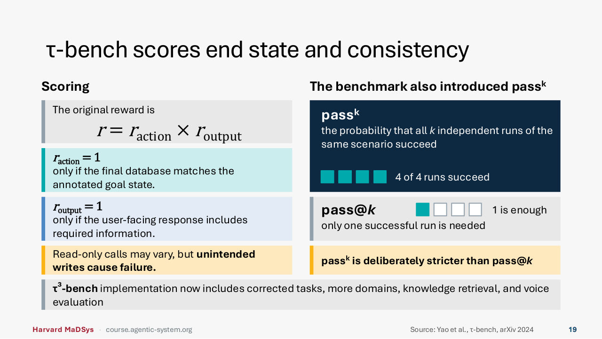
τ-bench 对终态和一致性计分
计分：原始奖励为 r = r_action × r_output
- r_action = 1：仅当最终数据库与标注的目标状态一致
- r_output = 1：仅当面向用户的回复包含所需信息
- 只读调用可以不同，但意外的写入会导致失败
该基准还提出了 pass^k
- pass^k：同一场景下 k 次独立运行全部成功的概率（例：4 次全成功）
- pass@k：只需一次成功（1 次就够）
τ³-bench 的实现现已包含修正后的任务、更多领域、知识检索和语音评测。
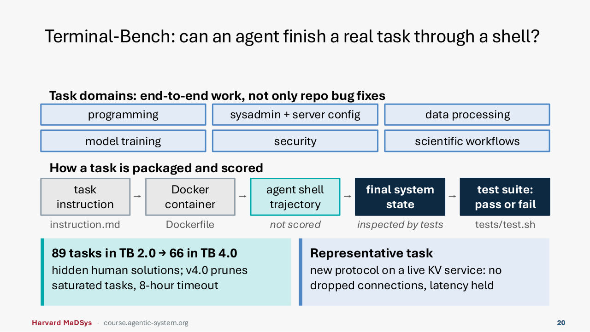
Terminal-Bench：智能体能通过 shell 完成真实任务吗？
任务领域：端到端的工作，不只是修仓库里的 bug——编程、系统管理与服务器配置、数据处理、模型训练、安全、科学计算工作流
任务如何打包和计分：任务说明（instruction.md）→ Docker 容器（Dockerfile）→ 智能体的 shell 轨迹（不计分）→ 最终系统状态（由测试检查）→ 测试套件（tests/test.sh）：通过或失败
- TB 2.0 有 89 个任务 → TB 4.0 有 66 个
- 人类参考解答不公开；v4.0 剔除已饱和的任务，超时上限 8 小时
- 代表性任务：在一个线上运行的 KV 服务上切换新协议——不能掉连接，延迟要保持住
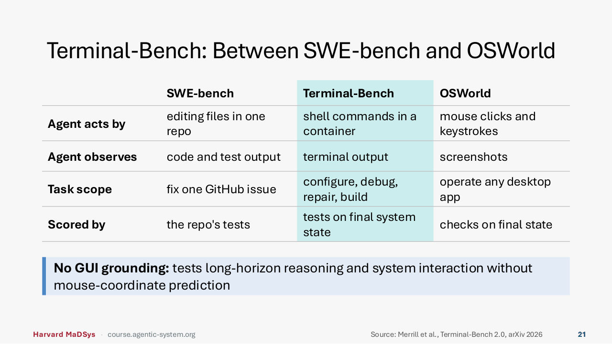
Terminal-Bench：介于 SWE-bench 与 OSWorld 之间
| SWE-bench | Terminal-Bench | OSWorld | |
|---|---|---|---|
| 智能体的动作方式 | 编辑单个仓库中的文件 | 在容器中执行 shell 命令 | 鼠标点击和键盘输入 |
| 智能体观察到 | 代码和测试输出 | 终端输出 | 屏幕截图 |
| 任务范围 | 修复一个 GitHub issue | 配置、调试、修复、构建 | 操作任意桌面应用 |
| 计分方式 | 仓库自带的测试 | 对最终系统状态的测试 | 对最终状态的检查 |
（来源：Merrill et al., Terminal-Bench 2.0, arXiv 2026）
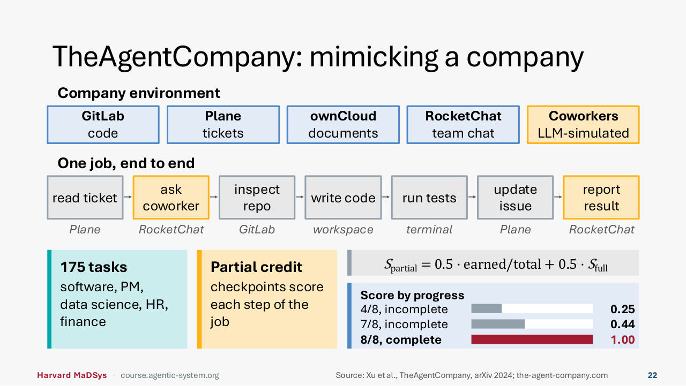
TheAgentCompany：模拟一家公司
公司环境：GitLab（代码）、Plane（工单）、ownCloud（文档）、RocketChat（团队聊天）、由 LLM 模拟的同事
一项完整的工作：读工单（Plane）→ 询问同事（RocketChat）→ 查看仓库（GitLab）→ 写代码（工作区）→ 运行测试（终端）→ 更新 issue（Plane）→ 汇报结果（RocketChat）
- 175 个任务：软件开发、项目管理、数据科学、人力资源、财务
- 部分给分：用检查点给工作的每一步打分
- S_partial = 0.5 · 已得/总数 + 0.5 · S_full
- 按进度计分：4/8 未完成 → 0.25；7/8 未完成 → 0.44；8/8 完成 → 1.00
（来源：Xu et al., TheAgentCompany, arXiv 2024；the-agent-company.com）
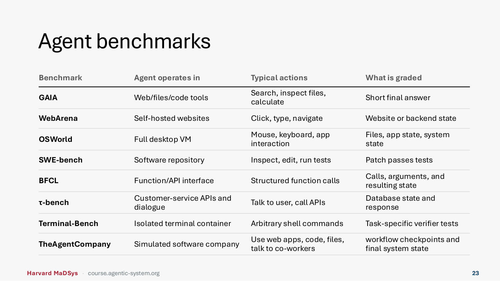
智能体基准一览
| 基准 | 智能体运行于 | 典型动作 | 评什么 |
|---|---|---|---|
| GAIA | 网页 / 文件 / 代码工具 | 搜索、查看文件、计算 | 简短的最终答案 |
| WebArena | 自托管网站 | 点击、输入、导航 | 网站或后端状态 |
| OSWorld | 完整的桌面虚拟机 | 鼠标、键盘、应用交互 | 文件、应用状态、系统状态 |
| SWE-bench | 软件仓库 | 查看、编辑、运行测试 | 补丁能否通过测试 |
| BFCL | 函数 / API 接口 | 结构化函数调用 | 调用、参数及产生的状态 |
| τ-bench | 客服 API 与对话 | 与用户对话、调用 API | 数据库状态与回复 |
| Terminal-Bench | 隔离的终端容器 | 任意 shell 命令 | 针对任务的验证测试 |
| TheAgentCompany | 模拟的软件公司 | 使用 Web 应用、代码、文件，与同事交流 | 工作流检查点与最终系统状态 |
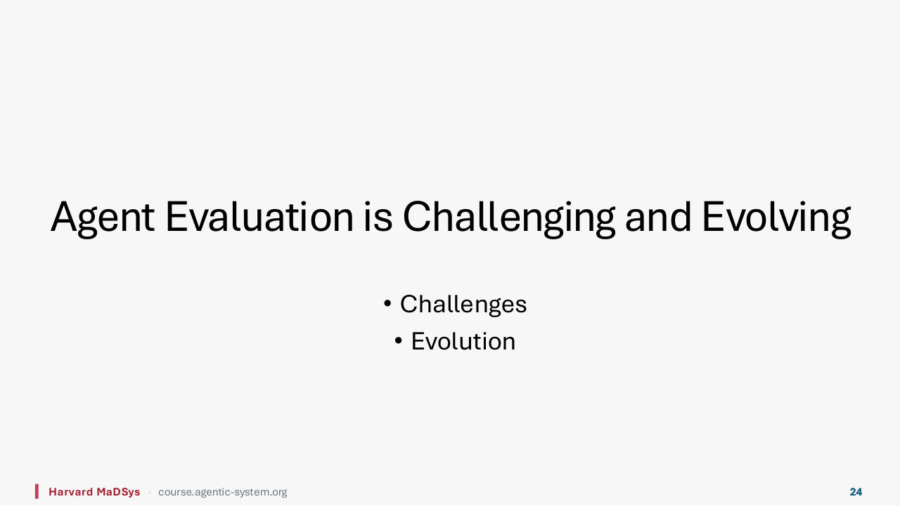
智能体评测充满挑战，且仍在演进
- 挑战
- 演进
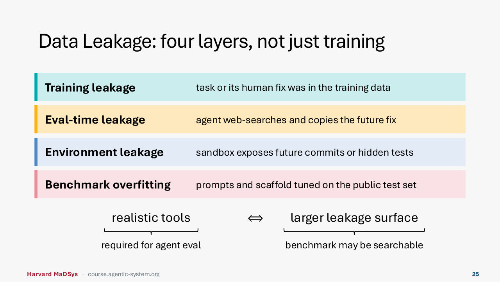
数据泄漏：四个层面，而不只是训练
- 训练泄漏：任务或其人工修复出现在训练数据中
- 评测时泄漏：智能体上网搜索并抄来“未来”的修复
- 环境泄漏：沙箱暴露了未来的提交或隐藏的测试
- 基准过拟合：提示词和脚手架是针对公开测试集调出来的
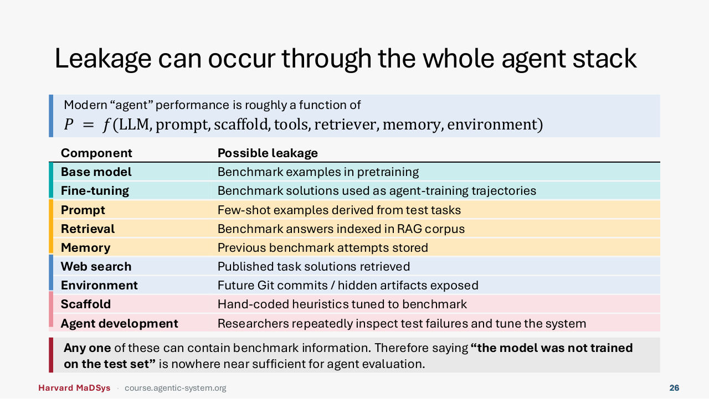
泄漏可能发生在整个智能体栈中
现代“智能体”的表现大致是这样一个函数：
| 组件 | 可能的泄漏 |
|---|---|
| 基座模型 | 预训练数据中含有基准样例 |
| 微调 | 用基准答案作为智能体训练轨迹 |
| 提示词 | 从测试任务中派生的少样本示例 |
| 检索 | 基准答案被索引进 RAG 语料 |
| 记忆 | 存下了之前的基准尝试 |
| 网络搜索 | 搜到了已公开的任务解答 |
| 环境 | 暴露了未来的 Git 提交 / 隐藏产物 |
| 脚手架 | 针对基准手工编写的启发式规则 |
| 智能体开发 | 研究者反复查看测试失败并调优系统 |
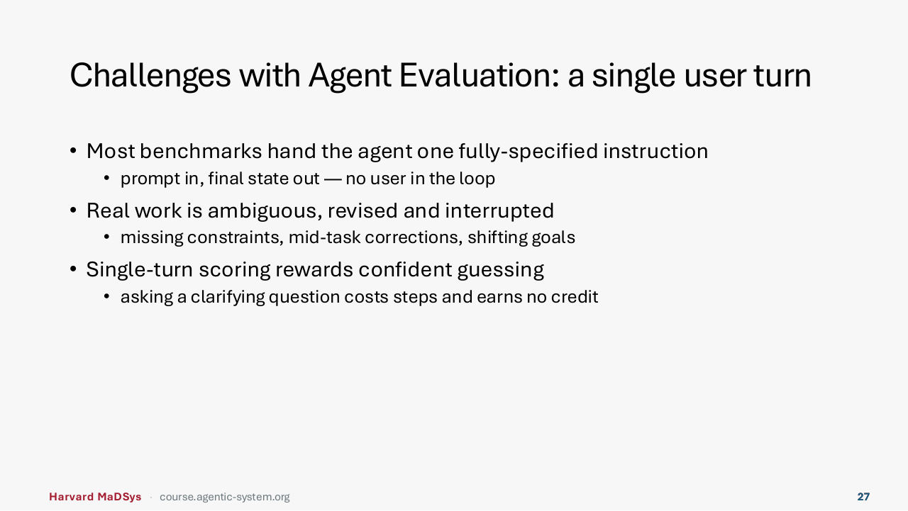
智能体评测的挑战：单一用户轮次
- 大多数基准只给智能体一条完全明确的指令
- 提示词进去，最终状态出来——回路中没有用户
- 真实工作是含糊的、会被修改、会被打断的
- 缺失约束、任务中途的纠正、不断变化的目标
- 单轮计分奖励“自信地瞎猜”
- 问一个澄清问题要花步数，却得不到任何分数
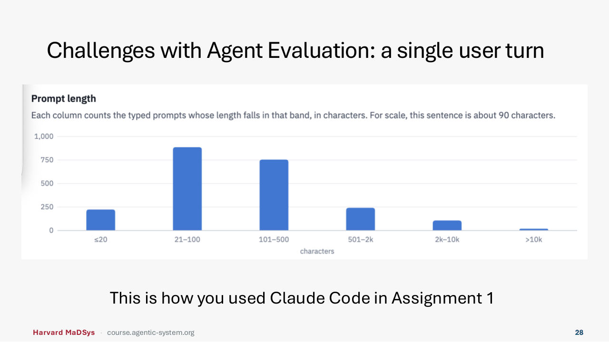
智能体评测的挑战：单一用户轮次
这就是你们在作业 1 中使用 Claude Code 的方式。（图：作业 1 中的多轮交互统计）
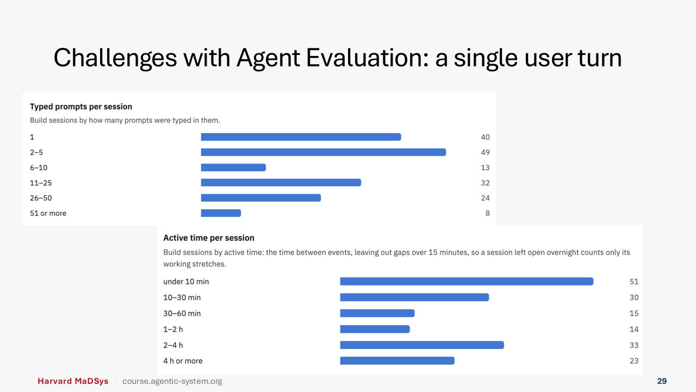
智能体评测的挑战：单一用户轮次
（图表页）
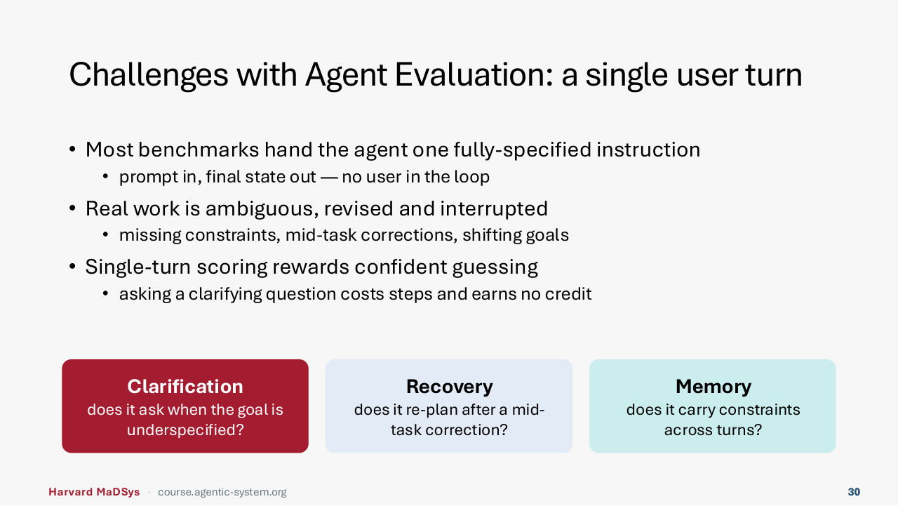
智能体评测的挑战：单一用户轮次
- 大多数基准只给智能体一条完全明确的指令——提示词进去，最终状态出来，回路中没有用户
- 真实工作是含糊的、会被修改、会被打断的——缺失约束、中途纠正、目标变化
- 单轮计分奖励“自信地瞎猜”——问澄清问题要花步数，却拿不到分
多轮评测应当考察：
- 澄清：目标不明确时它会问吗？
- 恢复：任务中途被纠正后它会重新规划吗？
- 记忆：它能把约束带到后续轮次吗？
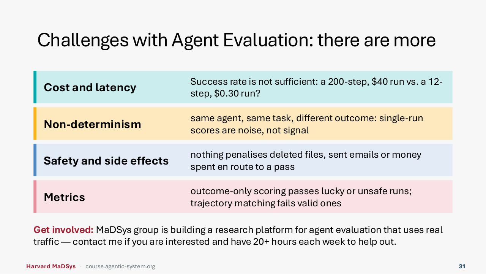
智能体评测的挑战：还有更多
- 成本与延迟：只看成功率不够——一个 200 步、$40 的运行，和一个 12 步、$0.30 的运行，怎么比？
- 非确定性：同一个智能体、同一个任务，结果不同：单次运行的分数是噪声，不是信号
- 安全与副作用：在通过测试的路上删了文件、发了邮件、花了钱，却没有任何惩罚
- 指标：只看结果的计分会让侥幸或不安全的运行通过；而要求轨迹匹配又会让合理的运行失败
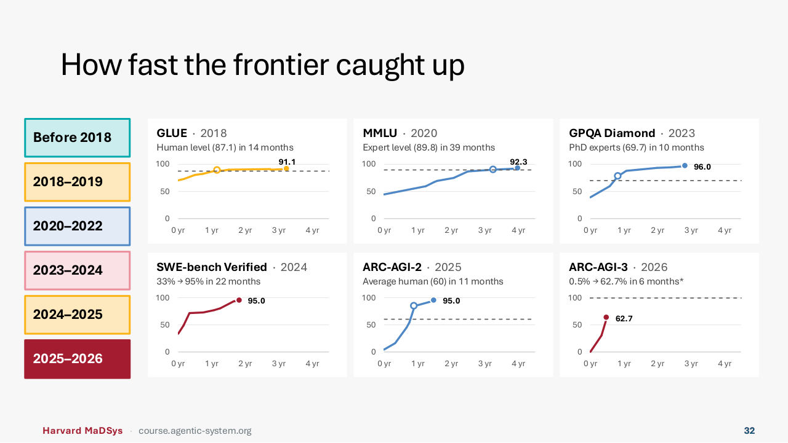
前沿模型追上来的速度有多快
- GLUE · 2018：14 个月达到人类水平（87.1），最高 91.1
- MMLU · 2020：39 个月达到专家水平（89.8），最高 92.3
- GPQA Diamond · 2023：10 个月达到博士专家水平（69.7），最高 96.0
- SWE-bench Verified · 2024：22 个月从 33% → 95%
- ARC-AGI-2 · 2025：11 个月达到普通人类水平（60），最高 95.0
- ARC-AGI-3 · 2026：6 个月从 0.5% → 62.7%\*
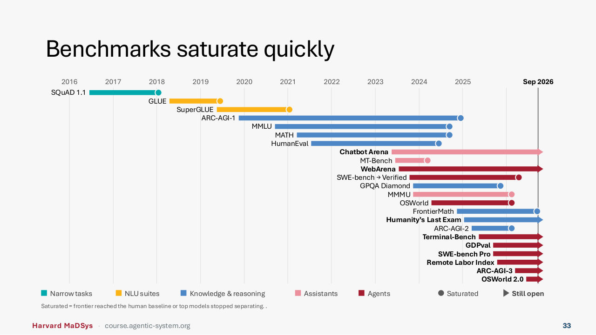
基准很快就会饱和
时间线（2016 → 2026 年 9 月），按类别：窄任务 → NLU 套件 → 知识与推理 → 助手 → 智能体
- 已饱和：SQuAD 1.1、GLUE、SuperGLUE、ARC-AGI-1、MMLU、MATH、HumanEval、Chatbot Arena、MT-Bench、WebArena、SWE-bench → Verified、GPQA Diamond、MMMU、OSWorld……
- 仍未解决：FrontierMath、Humanity's Last Exam、ARC-AGI-2、Terminal-Bench、GDPval、SWE-bench Pro、Remote Labor Index、ARC-AGI-3、OSWorld 2.0 等（以图为准）
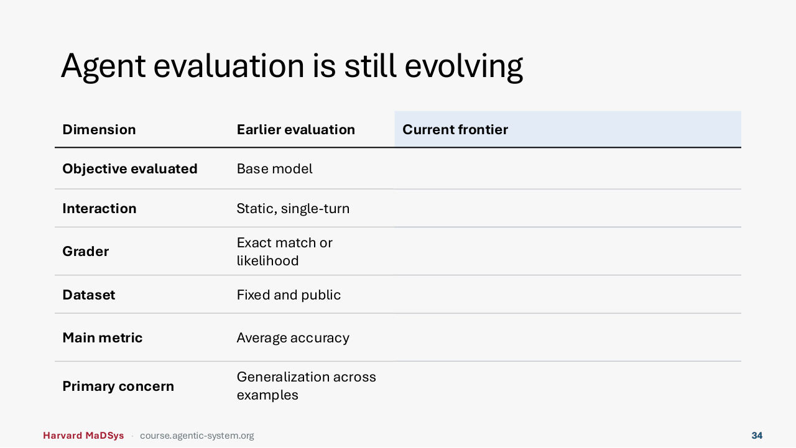
智能体评测仍在演进
| 维度 | 早期评测 | 当前前沿 |
|---|---|---|
| 评测对象 | 基座模型 | 模型 + 提示词 + 工具 + 智能体 Harness |
| 交互 | 静态、单轮 | 有状态、长程 |
| 评判者 | 精确匹配或似然 | 测试、环境状态、人类或评判模型 |
| 数据集 | 固定且公开 | 新鲜、隐藏、动态或考虑污染 |
| 主要指标 | 平均准确率 | 除任务成功外的系统效率、可靠性、质量、成本和延迟 |
| 主要关注 | 跨样例的泛化 | 在真实约束和安全要求下稳健地完成任务 |
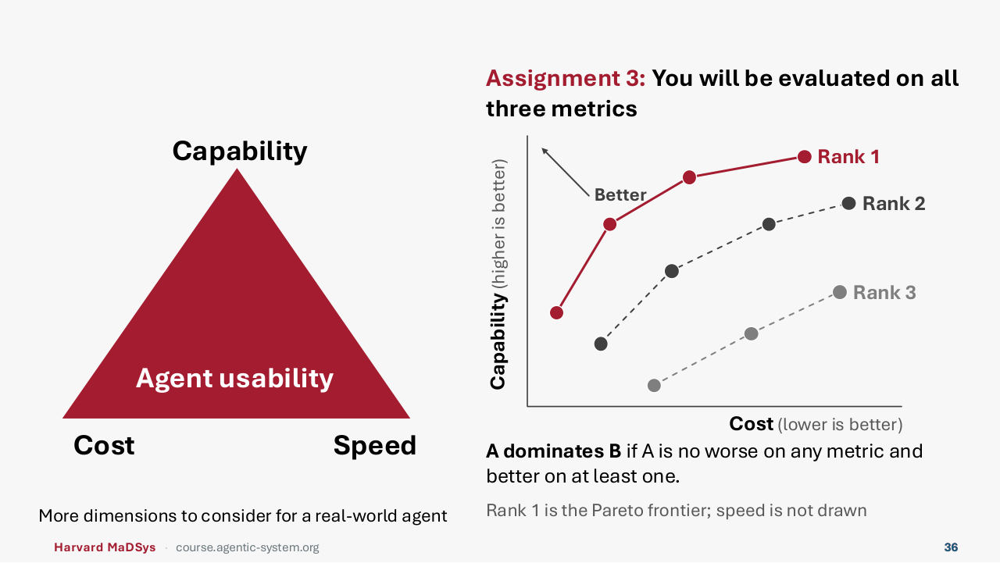
真实世界的智能体要考虑更多维度
能力 · 成本 · 速度 · 智能体可用性
（图：横轴成本（越低越好）、纵轴能力（越高越好）的帕累托分层；速度未画出）
- 若 A 在任何指标上都不比 B 差、且至少一个指标更好，则 A 支配 B
- 第 1 层就是帕累托前沿，其次是第 2 层、第 3 层
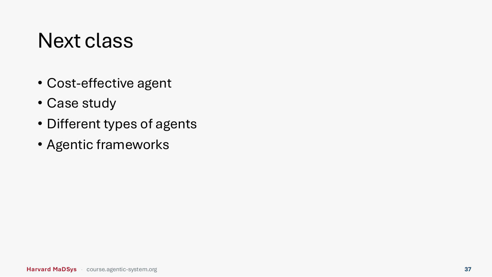
下节课
- 高性价比的智能体
- 案例研究
- 不同类型的智能体
- 智能体框架